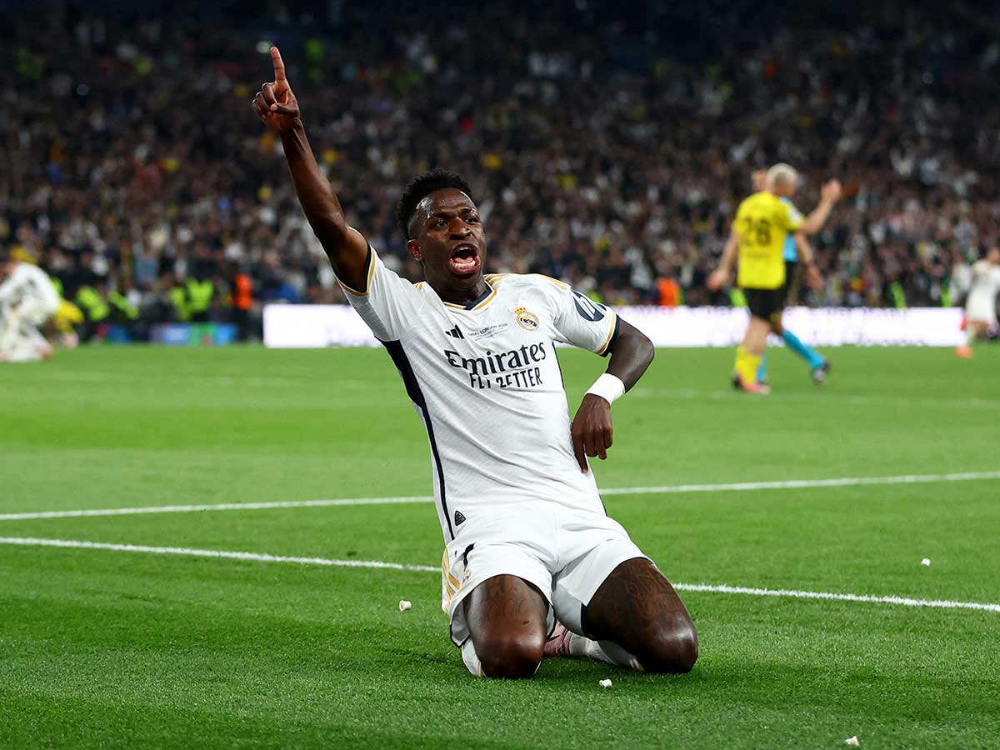
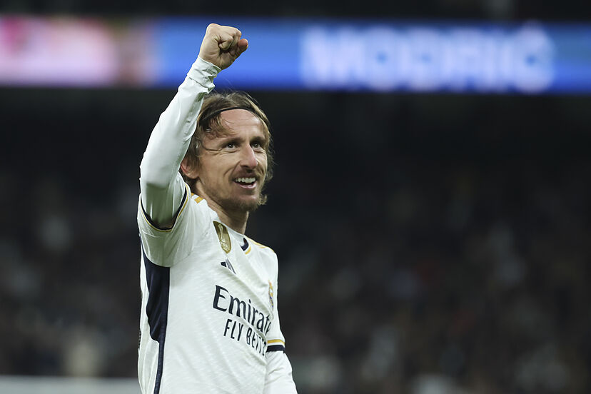

Nuestro Equipo Actual
| Nombre | Posición | Número | Nacionalidad |
|---|---|---|---|
| Thibaut Courtois | Portero | 1 | Bélgica |
| David Alaba | Defensor | 4 | Austria |
| Luka Modrić | Mediocampista | 10 | Croacia |
| Vinícius Jr. | Delantero | 7 | Brasil |
| Jude Bellingham | Mediocampista | 5 | Inglaterra |
Jugadores destacados

Vinícius Jr. - Delantero Brasileño, considerado uno de los jugadores más explosivos y habilidosos del equipo.

Luka Modrić - Mediocampista Croata, ganador del Balón de Oro en 2018, es el corazón del centro del campo del Madrid.